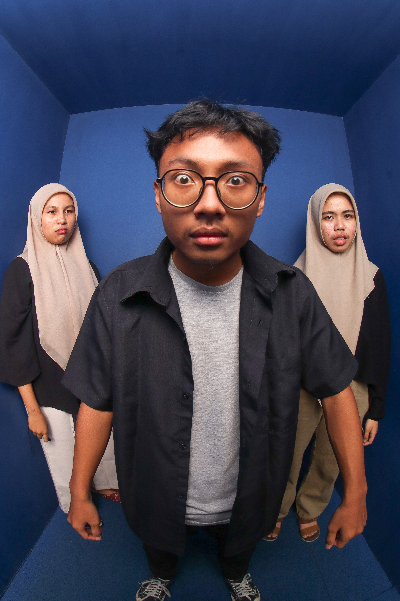

Nama : Bagas Satya Widhi
Nim : 20240140170
Email: bagas.satya.ft24@mail.umy.ac.id
Seorang mahasiswa yang sedang menempuh pendidikan di Universitas Muhammadiyah Yogyakarta. Saya memiliki minat yang besar dalam bidang teknologi dan pengembangan web. Saya senang belajar hal-hal baru dan selalu berusaha untuk meningkatkan keterampilan saya dalam pemrograman dan desain web. Selain itu, saya juga aktif dalam berbagai kegiatan organisasi di kampus, yang membantu saya mengembangkan kemampuan kepemimpinan dan kerja sama tim. Saya berharap dapat terus berkembang dan mencapai tujuan karir saya di bidang teknologi.